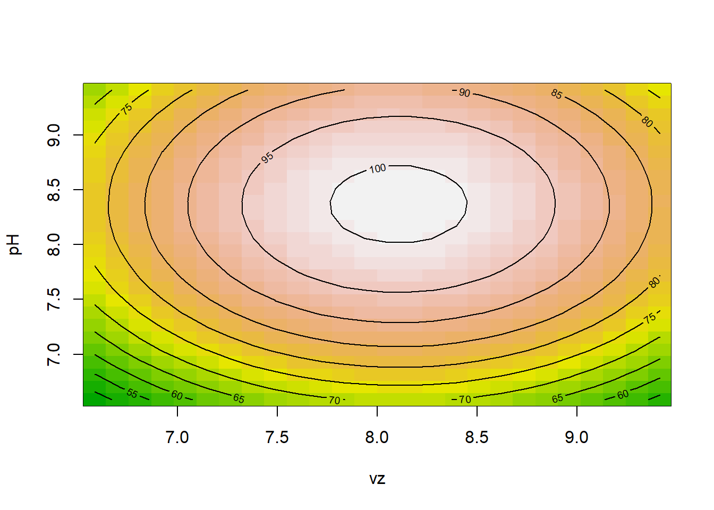
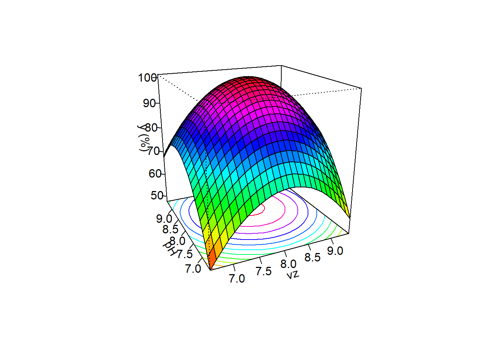
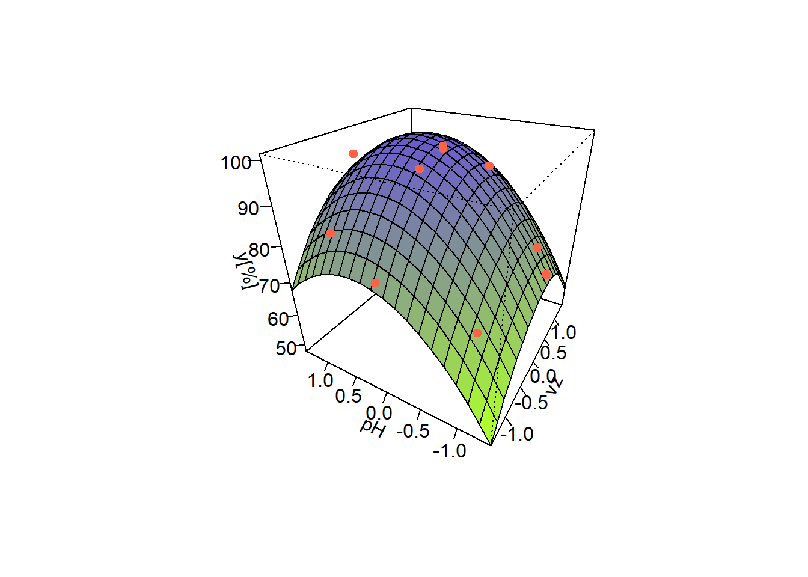
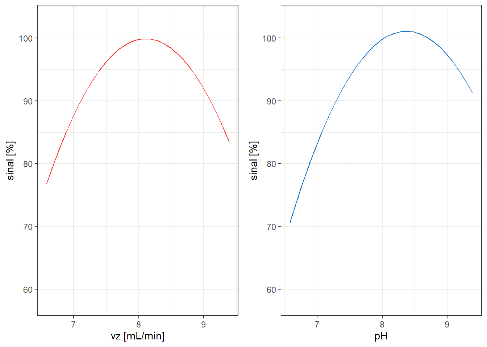
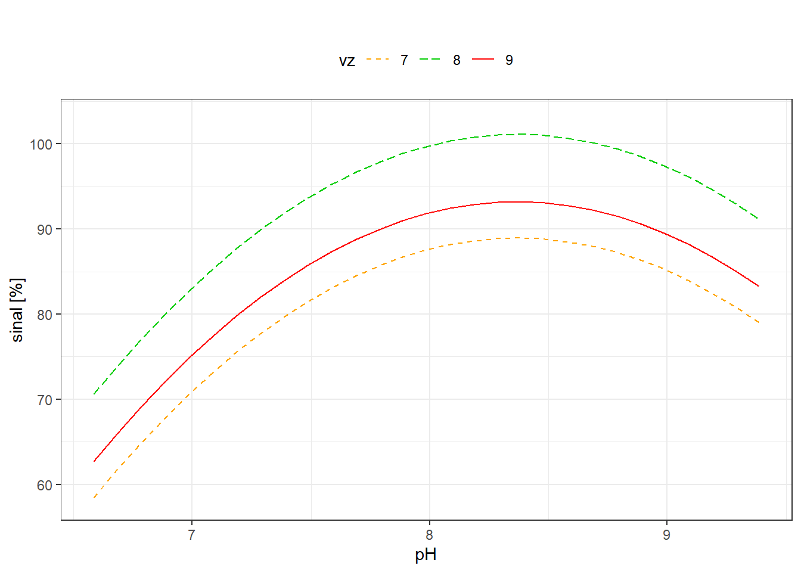
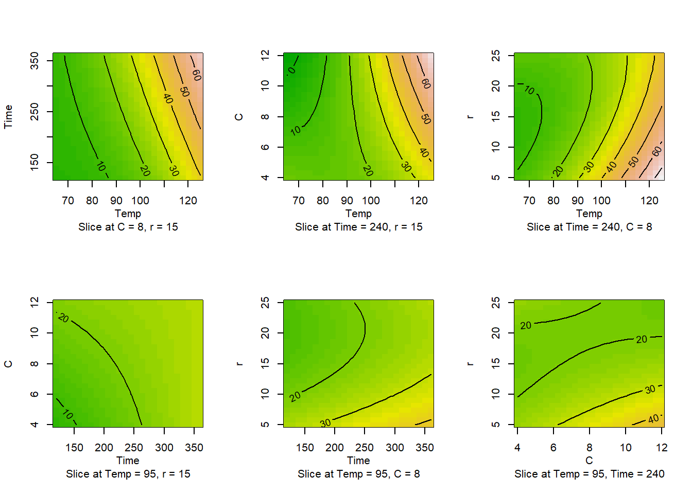
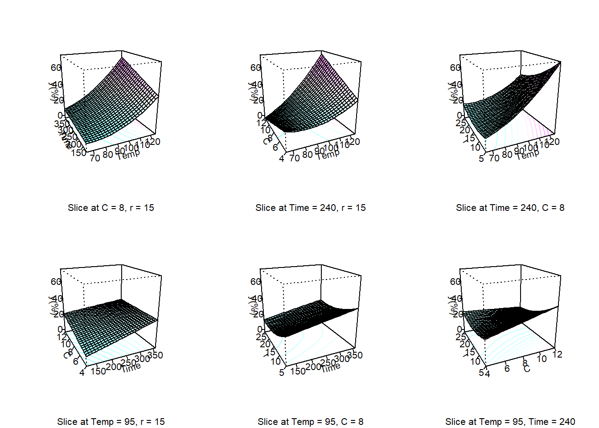
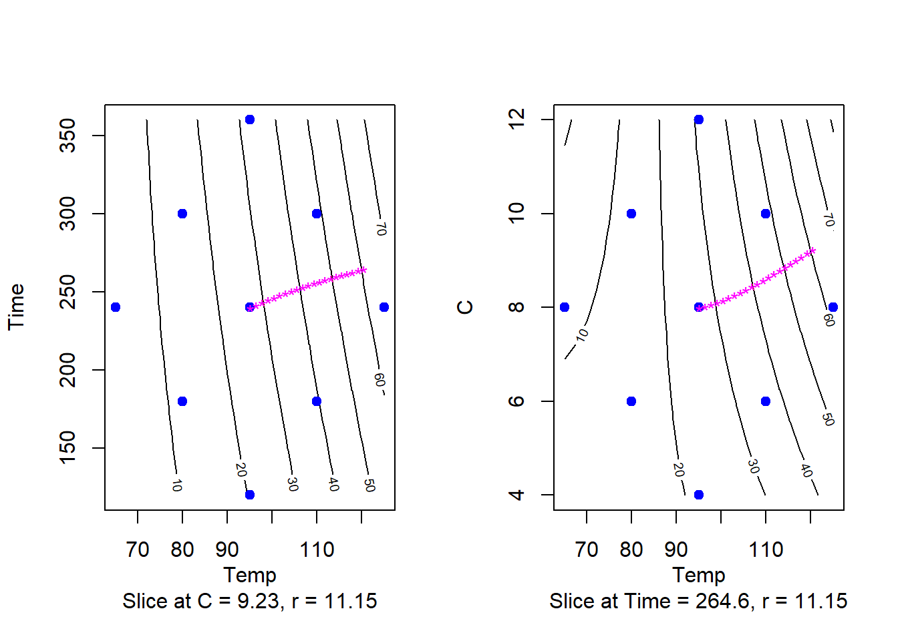
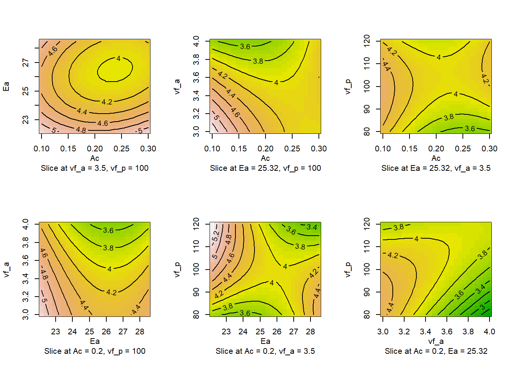
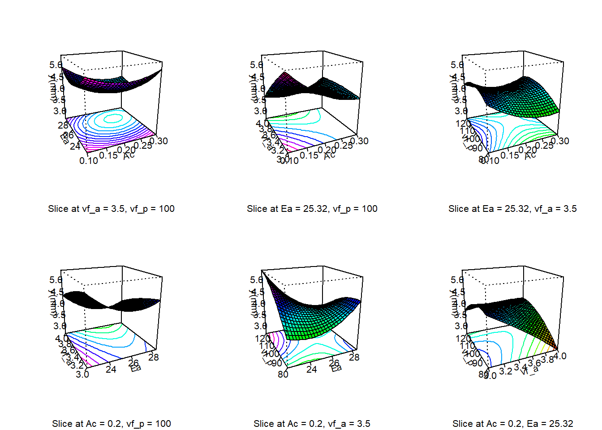

library(rsm)Warning: package 'rsm' was built under R version 4.3.3Determinação de cobre em diferentes amostras de água por espectrometria de emissão óptica.
Resposta (y): sinal analítico resultante das medições de altura de pico instrumental. O maior foi considerado como 100% e os demais como percentual relativo a este.
library(rsm)Warning: package 'rsm' was built under R version 4.3.3ccd1 <- ccd(basis = ~x1+x2,
n0 = c(0,3),
alpha = "rotatable",
randomize = F,
oneblock = TRUE,
coding = list(x1 ~ (vz - 8)/1,
x2 ~ (pH - 8)/1))
y <- c(68.64, 69.82, 81.66, 85.80,
79.29, 87.57, 74.56, 94.08,
100, 99.41, 100)
ccd1$y <- y
ccd1 run.order std.order vz pH y
1 1 1 7.000000 7.000000 68.64
2 2 2 9.000000 7.000000 69.82
3 3 3 7.000000 9.000000 81.66
4 4 4 9.000000 9.000000 85.80
5 1 1 6.585786 8.000000 79.29
6 2 2 9.414214 8.000000 87.57
7 3 3 8.000000 6.585786 74.56
8 4 4 8.000000 9.414214 94.08
9 5 5 8.000000 8.000000 100.00
10 6 6 8.000000 8.000000 99.41
11 7 7 8.000000 8.000000 100.00
Data are stored in coded form using these coding formulas ...
x1 ~ (vz - 8)/1
x2 ~ (pH - 8)/1Modelagem.
lm1 <- lm(y~SO(x1,x2), data = ccd1)
summary(lm1)
Call:
lm(formula = y ~ SO(x1, x2), data = ccd1)
Residuals:
1 2 3 4 5 6 7 8 9 10
-3.0731 -4.6705 -2.7245 -4.3219 2.5680 4.8270 3.9440 3.4510 0.1967 -0.3933
11
0.1967
Coefficients:
Estimate Std. Error t value Pr(>|t|)
(Intercept) 99.803 2.768 36.052 3.09e-07 ***
SO(x1, x2)x1 2.129 1.695 1.256 0.26470
SO(x1, x2)x2 7.076 1.695 4.174 0.00871 **
SO(x1, x2)x1:x2 0.740 2.397 0.309 0.77002
SO(x1, x2)x1^2 -10.035 2.018 -4.974 0.00420 **
SO(x1, x2)x2^2 -9.590 2.018 -4.753 0.00509 **
---
Signif. codes: 0 '***' 0.001 '**' 0.01 '*' 0.05 '.' 0.1 ' ' 1
Residual standard error: 4.795 on 5 degrees of freedom
Multiple R-squared: 0.9176, Adjusted R-squared: 0.8352
F-statistic: 11.14 on 5 and 5 DF, p-value: 0.009668Modelagem usando comando rsm.
rsm1 <- rsm(y~SO(x1,x2), data = ccd1)
summary(rsm1)
Call:
rsm(formula = y ~ SO(x1, x2), data = ccd1)
Estimate Std. Error t value Pr(>|t|)
(Intercept) 99.8033 2.7683 36.0525 3.091e-07 ***
x1 2.1287 1.6952 1.2557 0.264704
x2 7.0757 1.6952 4.1739 0.008706 **
x1:x2 0.7400 2.3974 0.3087 0.770021
x1^2 -10.0354 2.0177 -4.9737 0.004199 **
x2^2 -9.5904 2.0177 -4.7531 0.005090 **
---
Signif. codes: 0 '***' 0.001 '**' 0.01 '*' 0.05 '.' 0.1 ' ' 1
Multiple R-squared: 0.9176, Adjusted R-squared: 0.8352
F-statistic: 11.14 on 5 and 5 DF, p-value: 0.009668
Analysis of Variance Table
Response: y
Df Sum Sq Mean Sq F value Pr(>F)
FO(x1, x2) 2 436.77 218.39 9.4991 0.019814
TWI(x1, x2) 1 2.19 2.19 0.0953 0.770021
PQ(x1, x2) 2 841.17 420.59 18.2941 0.005012
Residuals 5 114.95 22.99
Lack of fit 3 114.72 38.24 329.5566 0.003027
Pure error 2 0.23 0.12
Stationary point of response surface:
x1 x2
0.1198313 0.3735164
Stationary point in original units:
vz pH
8.119831 8.373516
Eigenanalysis:
eigen() decomposition
$values
[1] -9.381169 -10.244665
$vectors
[,1] [,2]
x1 -0.4922667 -0.8704444
x2 -0.8704444 0.4922667Condições de otimalidade.
canonical(rsm1)$xs
x1 x2
0.1198313 0.3735164
$eigen
eigen() decomposition
$values
[1] -9.381169 -10.244665
$vectors
[,1] [,2]
x1 -0.4922667 -0.8704444
x2 -0.8704444 0.4922667Modelo reduzido.
rsm2 <- rsm(y~FO(x1,x2)+PQ(x1,x2), data = ccd1)
summary(rsm2)
Call:
rsm(formula = y ~ FO(x1, x2) + PQ(x1, x2), data = ccd1)
Estimate Std. Error t value Pr(>|t|)
(Intercept) 99.8033 2.5510 39.1225 1.863e-08 ***
x1 2.1287 1.5622 1.3626 0.221920
x2 7.0757 1.5622 4.5293 0.003978 **
x1^2 -10.0354 1.8594 -5.3972 0.001668 **
x2^2 -9.5904 1.8594 -5.1579 0.002099 **
---
Signif. codes: 0 '***' 0.001 '**' 0.01 '*' 0.05 '.' 0.1 ' ' 1
Multiple R-squared: 0.916, Adjusted R-squared: 0.8601
F-statistic: 16.36 on 4 and 6 DF, p-value: 0.002219
Analysis of Variance Table
Response: y
Df Sum Sq Mean Sq F value Pr(>F)
FO(x1, x2) 2 436.77 218.39 11.186 0.009458
PQ(x1, x2) 2 841.17 420.59 21.543 0.001826
Residuals 6 117.14 19.52
Lack of fit 4 116.91 29.23 251.887 0.003958
Pure error 2 0.23 0.12
Stationary point of response surface:
x1 x2
0.1060599 0.3688933
Stationary point in original units:
vz pH
8.106060 8.368893
Eigenanalysis:
eigen() decomposition
$values
[1] -9.590417 -10.035417
$vectors
[,1] [,2]
x1 0 -1
x2 -1 0Pressuposições.
Normalidade.
shapiro.test(rsm2$residuals)
Shapiro-Wilk normality test
data: rsm2$residuals
W = 0.94737, p-value = 0.6106Homocedasticidade.
library(olsrr)Warning: package 'olsrr' was built under R version 4.3.3
Attaching package: 'olsrr'The following object is masked from 'package:datasets':
riverslm2 <- lm(y ~ x1+x2+I(x1^2)+I(x2^2), ccd1)
ols_test_breusch_pagan(lm2, rhs=T, multiple=T)
Breusch Pagan Test for Heteroskedasticity
-----------------------------------------
Ho: the variance is constant
Ha: the variance is not constant
Data
--------------------------------
Response : y
Variables: x1 x2 I(x1^2) I(x2^2)
Test Summary (Unadjusted p values)
----------------------------------------------
Variable chi2 df p
----------------------------------------------
x1 1.2848366 1 0.2570017
x2 0.1246822 1 0.7240107
I(x1^2) 0.8315588 1 0.3618222
I(x2^2) 0.6116737 1 0.4341583
----------------------------------------------
simultaneous 3.4486734 4 0.4857255
----------------------------------------------Gráficos.
contour(rsm2, ~x1+x2, image=T)
persp(rsm2, ~x1+x2, col = rainbow(50),
contours = "colors", zlab = "y (%)")
Comandos básicos para encontrar o pnto estacionário e fazer análise de otimalidade.
b <- rsm2$b
B <- rsm2$Bponto estacionário.
# xs <- canonical(rsm2)$xs
xs <- -0.5*solve(B)%*%b
xs [,1]
x1 0.1060599
x2 0.3688933Autovalores de B.
eigen(B)eigen() decomposition
$values
[1] -9.590417 -10.035417
$vectors
[,1] [,2]
[1,] 0 -1
[2,] -1 0Previsão no ponto estacionário.
predict(rsm2, newdata = data.frame(x1 = xs[1],
x2 = xs[2])) 1
101.2213 Gráfico de perspectiva passo a passo.
xs <- seq(min(ccd1$x1), max(ccd1$x1), length = 20)
ys <- seq(min(ccd1$x2), max(ccd1$x2), length = 20)
xys <- expand.grid(x1 = xs, x2 = ys)
zs <- matrix(predict(rsm2, newdata = xys), nrow = length(xs))
n.cols <- 100
palette <- colorRampPalette(c("greenyellow", "slateblue"))(n.cols)
zfacet <- zs[-1, -1] + zs[-1, -20] + zs[-20, -1] + zs[-20, -20]
facetcol <- cut(zfacet, n.cols)
p1 <- persp(x=xs, y=ys, z=zs, theta=300, phi=30, ticktype='detailed',
xlab="vz", ylab="pH", zlab="y[%]", col = palette[facetcol])
with(ccd1, points(trans3d(x1,x2,y,p1), pch=20, col = "tomato", cex = 1.5))
library(ggplot2)Warning: package 'ggplot2' was built under R version 4.3.3# x1
x1_grid <- seq(min(ccd1$x1), max(ccd1$x1), 0.1)
center_grid <- rep(0,length(x1_grid))
p1 <- ggplot() +
geom_line(aes(x = x1_grid,
y = (predict(rsm2,
newdata = data.frame(x1 = x1_grid,
x2 = center_grid)))),
colour = 'firebrick1') +
xlab("vz [mL/min]") +
ylab("sinal [%]") +
ylim(58,103) +
scale_x_continuous(breaks = c(-1, 0, 1), label = c(7,8,9)) +
theme_bw()
# p1
p2 <- ggplot() +
geom_line(aes(x = x1_grid,
y = (predict(rsm2,
newdata = data.frame(x2 = x1_grid,
x1 = center_grid)))),
colour = 'dodgerblue3') +
xlab("pH") +
ylab("sinal [%]") +
ylim(58,103) +
scale_x_continuous(breaks = c(-1, 0, 1), label = c(7,8,9)) +
theme_bw()
# p2
p12 <- ggplot() +
geom_line(aes(x = x1_grid,
y = predict(rsm2,
newdata = data.frame(x2 = x1_grid,
x1 = center_grid)),
color = "8", linetype = "8")) +
ggtitle('') +
xlab('pH') +
ylab('sinal [%]') +
ylim(58,103) +
scale_x_continuous(breaks = c(-1, 0, 1), label = c(7,8,9)) +
theme_bw()
x2_grid_1 = rep(-1,length(x1_grid))
x2_grid1 = rep(1,length(x1_grid))
p12 <- p12 +
geom_line(aes(x = x1_grid,
y = predict(rsm2,
newdata = data.frame(x2 = x1_grid,
x1 = x2_grid_1)),
color = "7", linetype = "7")) +
geom_line(aes(x = x1_grid,
y = predict(rsm2,
newdata = data.frame(x2 = x1_grid,
x1 = x2_grid1)),
color = "9", linetype = "9")) +
scale_color_manual(name = "vz",
values = c("7" = "orange1", "8" = "green3", "9" = "red1")) +
scale_linetype_manual(name = "vz",
values = c("7" = "dashed", "8" = "longdash", "9" = "solid")) + theme(legend.position="top")
# p12
library(ggpubr)Warning: package 'ggpubr' was built under R version 4.3.3ggarrange(p1,p2)
p12
Recuperação de titânio em um processo de lixiviação.
x1: temperatura (ºC) x2: tempo (min) x3: concentração (mol/L) x4: razão de sólido/líquido (gr/L), 1 gr = 64.8 mg
y: recuperação de titânio observada (%)
library(rsm)
ccd1 <- ccd(basis = ~x1+x2+x3+x4,
n0 = c(0,6),
randomize = F,
alpha = "rotatable",
coding = list(x1 ~ (Temp - 95)/15,
x2 ~ (Time - 240)/60,
x3 ~ (C - 8)/2,
x4 ~ (r - 15)/5))
ccd1$y <- c(13.21, 30.5, 18.72, 42.61, 13.85, 46.27, 17.46, 53.73,
12.82, 22.53, 20.69, 34.32, 9.45, 30.54, 10.58, 40.83,
5.5, 49.62, 13.16, 27.23, 16.15, 22.96, 32.16, 17.94,
21.62, 21.13, 21.21, 19.28, 20.84, 20.45) Análise.
rsm1 <- rsm(y ~ SO(x1,x2,x3,x4), data = ccd1)
summary(rsm1)
Call:
rsm(formula = y ~ SO(x1, x2, x3, x4), data = ccd1)
Estimate Std. Error t value Pr(>|t|)
(Intercept) 20.75500 0.81271 25.5381 8.908e-14 ***
x1 11.36625 0.40635 27.9713 2.336e-14 ***
x2 3.66292 0.40635 9.0141 1.923e-07 ***
x3 1.70542 0.40635 4.1969 0.0007778 ***
x4 -3.45958 0.40635 -8.5137 3.968e-07 ***
x1:x2 1.47063 0.49768 2.9550 0.0098337 **
x1:x3 3.46938 0.49768 6.9711 4.492e-06 ***
x1:x4 -2.19937 0.49768 -4.4193 0.0004974 ***
x2:x3 -0.92438 0.49768 -1.8574 0.0830014 .
x2:x4 0.14937 0.49768 0.3001 0.7681875
x3:x4 -1.57688 0.49768 -3.1685 0.0063616 **
x1^2 2.20823 0.38011 5.8095 3.441e-05 ***
x2^2 0.36698 0.38011 0.9655 0.3496240
x3^2 0.20698 0.38011 0.5445 0.5940828
x4^2 1.58073 0.38011 4.1586 0.0008403 ***
---
Signif. codes: 0 '***' 0.001 '**' 0.01 '*' 0.05 '.' 0.1 ' ' 1
Multiple R-squared: 0.9864, Adjusted R-squared: 0.9738
F-statistic: 77.84 on 14 and 15 DF, p-value: 2.107e-11
Analysis of Variance Table
Response: y
Df Sum Sq Mean Sq F value Pr(>F)
FO(x1, x2, x3, x4) 4 3779.7 944.91 238.4369 2.226e-13
TWI(x1, x2, x3, x4) 6 358.4 59.73 15.0728 1.374e-05
PQ(x1, x2, x3, x4) 4 180.8 45.19 11.4036 0.0001878
Residuals 15 59.4 3.96
Lack of fit 10 56.1 5.61 8.3151 0.0152502
Pure error 5 3.4 0.67
Stationary point of response surface:
x1 x2 x3 x4
-1.1552851 -3.1157968 -0.3030376 0.2866550
Stationary point in original units:
Temp Time C r
77.670724 53.052195 7.393925 16.433275
Eigenanalysis:
eigen() decomposition
$values
[1] 3.9971380 1.0660727 0.4845984 -1.1848924
$vectors
[,1] [,2] [,3] [,4]
x1 0.7548385 0.42500325 0.1425215 0.47883051
x2 0.0875497 0.57836778 -0.6743435 -0.45065131
x3 0.4352385 -0.08703024 0.4852908 -0.75331671
x4 -0.4828264 0.69086082 0.5379975 -0.01219299Modelo com lm.
lm1 <- lm(y ~ (x1+x2+x3+x4)^2 + I(x1^2) + I(x2^2) + I(x3^2) +
I(x4^2), ccd1)
summary(lm1)
Call:
lm(formula = y ~ (x1 + x2 + x3 + x4)^2 + I(x1^2) + I(x2^2) +
I(x3^2) + I(x4^2), data = ccd1)
Residuals:
Min 1Q Median 3Q Max
-2.700 -1.445 0.415 1.007 2.048
Coefficients:
Estimate Std. Error t value Pr(>|t|)
(Intercept) 20.7550 0.8127 25.538 8.91e-14 ***
x1 11.3662 0.4064 27.971 2.34e-14 ***
x2 3.6629 0.4064 9.014 1.92e-07 ***
x3 1.7054 0.4064 4.197 0.000778 ***
x4 -3.4596 0.4064 -8.514 3.97e-07 ***
I(x1^2) 2.2082 0.3801 5.809 3.44e-05 ***
I(x2^2) 0.3670 0.3801 0.965 0.349624
I(x3^2) 0.2070 0.3801 0.545 0.594083
I(x4^2) 1.5807 0.3801 4.159 0.000840 ***
x1:x2 1.4706 0.4977 2.955 0.009834 **
x1:x3 3.4694 0.4977 6.971 4.49e-06 ***
x1:x4 -2.1994 0.4977 -4.419 0.000497 ***
x2:x3 -0.9244 0.4977 -1.857 0.083001 .
x2:x4 0.1494 0.4977 0.300 0.768187
x3:x4 -1.5769 0.4977 -3.168 0.006362 **
---
Signif. codes: 0 '***' 0.001 '**' 0.01 '*' 0.05 '.' 0.1 ' ' 1
Residual standard error: 1.991 on 15 degrees of freedom
Multiple R-squared: 0.9864, Adjusted R-squared: 0.9738
F-statistic: 77.84 on 14 and 15 DF, p-value: 2.107e-11Reduzindo o modelo.
lm2 <- step(lm1, trace = 1, direction = "backward")Start: AIC=50.52
y ~ (x1 + x2 + x3 + x4)^2 + I(x1^2) + I(x2^2) + I(x3^2) + I(x4^2)
Df Sum of Sq RSS AIC
- x2:x4 1 0.357 59.801 48.695
- I(x3^2) 1 1.175 60.619 49.103
- I(x2^2) 1 3.694 63.138 50.324
<none> 59.444 50.515
- x2:x3 1 13.672 73.116 54.725
- x1:x2 1 34.604 94.048 62.278
- x3:x4 1 39.785 99.229 63.887
- I(x4^2) 1 68.536 127.980 71.520
- x1:x4 1 77.396 136.840 73.529
- I(x1^2) 1 133.749 193.194 83.875
- x1:x3 1 192.585 252.029 91.850
Step: AIC=48.69
y ~ x1 + x2 + x3 + x4 + I(x1^2) + I(x2^2) + I(x3^2) + I(x4^2) +
x1:x2 + x1:x3 + x1:x4 + x2:x3 + x3:x4
Df Sum of Sq RSS AIC
- I(x3^2) 1 1.175 60.976 47.279
- I(x2^2) 1 3.694 63.495 48.493
<none> 59.801 48.695
- x2:x3 1 13.672 73.473 52.872
- x1:x2 1 34.604 94.405 60.392
- x3:x4 1 39.785 99.586 61.995
- I(x4^2) 1 68.536 128.337 69.604
- x1:x4 1 77.396 137.197 71.607
- I(x1^2) 1 133.749 193.551 81.930
- x1:x3 1 192.585 252.386 89.893
Step: AIC=47.28
y ~ x1 + x2 + x3 + x4 + I(x1^2) + I(x2^2) + I(x4^2) + x1:x2 +
x1:x3 + x1:x4 + x2:x3 + x3:x4
Df Sum of Sq RSS AIC
- I(x2^2) 1 3.188 64.164 46.807
<none> 60.976 47.279
- x2:x3 1 13.672 74.648 51.348
- x1:x2 1 34.604 95.580 58.763
- x3:x4 1 39.785 100.761 60.347
- I(x4^2) 1 67.371 128.347 67.606
- x1:x4 1 77.396 138.372 69.863
- I(x1^2) 1 132.904 193.880 79.981
- x1:x3 1 192.585 253.561 88.032
Step: AIC=46.81
y ~ x1 + x2 + x3 + x4 + I(x1^2) + I(x4^2) + x1:x2 + x1:x3 + x1:x4 +
x2:x3 + x3:x4
Df Sum of Sq RSS AIC
<none> 64.164 46.807
- x2:x3 1 13.672 77.836 50.602
- x1:x2 1 34.604 98.768 57.747
- x3:x4 1 39.785 103.949 59.281
- I(x4^2) 1 64.769 128.933 65.743
- x1:x4 1 77.396 141.560 68.546
- I(x1^2) 1 129.837 194.001 78.000
- x1:x3 1 192.585 256.749 86.407summary(lm2)
Call:
lm(formula = y ~ x1 + x2 + x3 + x4 + I(x1^2) + I(x4^2) + x1:x2 +
x1:x3 + x1:x4 + x2:x3 + x3:x4, data = ccd1)
Residuals:
Min 1Q Median 3Q Max
-2.987 -1.288 0.298 1.296 2.341
Coefficients:
Estimate Std. Error t value Pr(>|t|)
(Intercept) 21.3290 0.5450 39.134 < 2e-16 ***
x1 11.3662 0.3854 29.493 < 2e-16 ***
x2 3.6629 0.3854 9.504 1.94e-08 ***
x3 1.7054 0.3854 4.425 0.000327 ***
x4 -3.4596 0.3854 -8.977 4.58e-08 ***
I(x1^2) 2.1365 0.3540 6.035 1.05e-05 ***
I(x4^2) 1.5090 0.3540 4.263 0.000468 ***
x1:x2 1.4706 0.4720 3.116 0.005971 **
x1:x3 3.4694 0.4720 7.350 8.01e-07 ***
x1:x4 -2.1994 0.4720 -4.660 0.000195 ***
x2:x3 -0.9244 0.4720 -1.958 0.065866 .
x3:x4 -1.5769 0.4720 -3.341 0.003638 **
---
Signif. codes: 0 '***' 0.001 '**' 0.01 '*' 0.05 '.' 0.1 ' ' 1
Residual standard error: 1.888 on 18 degrees of freedom
Multiple R-squared: 0.9853, Adjusted R-squared: 0.9764
F-statistic: 110 on 11 and 18 DF, p-value: 3.571e-14Modelo reduzido com rsm.
rsm2 <- rsm(y ~ FO(x1,x2,x3,x4) + PQ(x1,x4) +
TWI(formula = ~ x1*x2+x1*x3+x1*x4+x2*x3+x3*x4),
ccd1)
summary(rsm2)
Call:
rsm(formula = y ~ FO(x1, x2, x3, x4) + PQ(x1, x4) + TWI(formula = ~x1 *
x2 + x1 * x3 + x1 * x4 + x2 * x3 + x3 * x4), data = ccd1)
Estimate Std. Error t value Pr(>|t|)
(Intercept) 21.32896 0.54503 39.1337 < 2.2e-16 ***
x1 11.36625 0.38539 29.4926 < 2.2e-16 ***
x2 3.66292 0.38539 9.5044 1.941e-08 ***
x3 1.70542 0.38539 4.4251 0.0003268 ***
x4 -3.45958 0.38539 -8.9768 4.577e-08 ***
x1^2 2.13648 0.35401 6.0352 1.049e-05 ***
x4^2 1.50898 0.35401 4.2626 0.0004684 ***
x1:x2 1.47063 0.47201 3.1157 0.0059709 **
x1:x3 3.46938 0.47201 7.3502 8.013e-07 ***
x1:x4 -2.19937 0.47201 -4.6596 0.0001950 ***
x2:x3 -0.92438 0.47201 -1.9584 0.0658663 .
x3:x4 -1.57688 0.47201 -3.3408 0.0036384 **
---
Signif. codes: 0 '***' 0.001 '**' 0.01 '*' 0.05 '.' 0.1 ' ' 1
Multiple R-squared: 0.9853, Adjusted R-squared: 0.9764
F-statistic: 110 on 11 and 18 DF, p-value: 3.571e-14
Analysis of Variance Table
Response: y
Df Sum Sq
FO(x1, x2, x3, x4) 4 3779.7
PQ(x1, x4) 2 176.4
TWI(formula = ~x1 * x2 + x1 * x3 + x1 * x4 + x2 * x3 + x3 * x4) 5 358.0
Residuals 18 64.2
Lack of fit 13 60.8
Pure error 5 3.4
Mean Sq
FO(x1, x2, x3, x4) 944.91
PQ(x1, x4) 88.20
TWI(formula = ~x1 * x2 + x1 * x3 + x1 * x4 + x2 * x3 + x3 * x4) 71.61
Residuals 3.56
Lack of fit 4.68
Pure error 0.67
F value
FO(x1, x2, x3, x4) 265.0777
PQ(x1, x4) 24.7435
TWI(formula = ~x1 * x2 + x1 * x3 + x1 * x4 + x2 * x3 + x3 * x4) 20.0883
Residuals
Lack of fit 6.9346
Pure error
Pr(>F)
FO(x1, x2, x3, x4) 9.912e-16
PQ(x1, x4) 6.831e-06
TWI(formula = ~x1 * x2 + x1 * x3 + x1 * x4 + x2 * x3 + x3 * x4) 8.556e-07
Residuals
Lack of fit 0.02165
Pure error
Stationary point of response surface:
x1 x2 x3 x4
-1.5917831 -5.3807096 1.4301563 0.7335507
Stationary point in original units:
Temp Time C r
71.12325 -82.84258 10.86031 18.66775
Eigenanalysis:
eigen() decomposition
$values
[1] 3.9045619 0.8690338 0.2705675 -1.3986945
$vectors
[,1] [,2] [,3] [,4]
x1 0.75766933 0.463964900 0.03959957 -0.45728070
x2 0.09248661 0.394310472 -0.77428197 0.48626424
x3 0.42407905 -0.003266963 0.51627016 0.74405068
x4 -0.48738114 0.793249740 0.36384672 0.02881047Gráficos.
par(mfrow=c(2,3))
contour(rsm2, ~ x1+x2+x3+x4, image = T)
par(mfrow=c(2,3))
persp(rsm2, ~x1+x2+x3+x4, zlab = "y(%)",
col = cm.colors(50), contours = "colors")
Otimização restrita.
otim <- steepest(rsm2, dist = seq(0, 2, by = 0.1),
descent = F)Path of steepest ascent from ridge analysis:otim dist x1 x2 x3 x4 | Temp Time C r | yhat
1 0.0 0.000 0.000 0.000 0.000 | 95.000 240.00 8.000 15.000 | 21.329
2 0.1 0.090 0.029 0.015 -0.029 | 96.350 241.74 8.030 14.855 | 22.617
3 0.2 0.180 0.056 0.034 -0.059 | 97.700 243.36 8.068 14.705 | 23.977
4 0.3 0.268 0.082 0.056 -0.091 | 99.020 244.92 8.112 14.545 | 25.394
5 0.4 0.356 0.108 0.079 -0.124 | 100.340 246.48 8.158 14.380 | 26.887
6 0.5 0.443 0.132 0.105 -0.159 | 101.645 247.92 8.210 14.205 | 28.450
7 0.6 0.529 0.155 0.133 -0.195 | 102.935 249.30 8.266 14.025 | 30.080
8 0.7 0.615 0.177 0.162 -0.232 | 104.225 250.62 8.324 13.840 | 31.788
9 0.8 0.701 0.199 0.193 -0.269 | 105.515 251.94 8.386 13.655 | 33.580
10 0.9 0.785 0.219 0.224 -0.308 | 106.775 253.14 8.448 13.460 | 35.419
11 1.0 0.870 0.239 0.257 -0.347 | 108.050 254.34 8.514 13.265 | 37.360
12 1.1 0.953 0.259 0.290 -0.387 | 109.295 255.54 8.580 13.065 | 39.350
13 1.2 1.037 0.277 0.325 -0.428 | 110.555 256.62 8.650 12.860 | 41.443
14 1.3 1.120 0.295 0.359 -0.469 | 111.800 257.70 8.718 12.655 | 43.590
15 1.4 1.202 0.313 0.395 -0.511 | 113.030 258.78 8.790 12.445 | 45.815
16 1.5 1.284 0.330 0.431 -0.553 | 114.260 259.80 8.862 12.235 | 48.113
17 1.6 1.366 0.347 0.467 -0.596 | 115.490 260.82 8.934 12.020 | 50.497
18 1.7 1.448 0.363 0.504 -0.638 | 116.720 261.78 9.008 11.810 | 52.952
19 1.8 1.529 0.379 0.542 -0.682 | 117.935 262.74 9.084 11.590 | 55.490
20 1.9 1.610 0.394 0.579 -0.725 | 119.150 263.64 9.158 11.375 | 58.084
21 2.0 1.691 0.410 0.617 -0.769 | 120.365 264.60 9.234 11.155 | 60.779par(mfrow = c(1,2))
contour(rsm2, ~x1+x2, col = "black", decode = T,
at = c(x3 = 0.617, x4 = -0.769))
points(c(80,110,80,110,65,125,95,95,95), c(180,180,300,300,240,240,120,360,240),
col = "blue", pch = 19)
points(Time ~ Temp, data = otim,
col = "magenta", pch = "*")
contour(rsm2, ~x1+x3, col = "black", decode = T,
at = c(x2 = 0.410 , x4 = -0.769))
points(c(80,110,80,110,65,125,95,95,95), c(6,6,10,10,8,8,4,12,8),
col = "blue", pch = 19)
points(C ~ Temp, data = otim,
col = "magenta", pch = "*")
Sinterização de inibição seletiva de peças de polietileno de alta densidade.
y: encolhimento das peças no sentido da largura.
design <- bbd(k = ~x1+x2+x3+x4,
block = F,
n0 = 5,
randomize = F,
coding = list(x1 ~ (Ac - 0.2)/0.1,
x2 ~ (Ea - 25.32)/3.16,
x3 ~ (vf_a - 3.5)/0.5,
x4 ~ (vf_p - 100)/20))
width <- c(5.3533, 5.2615, 5.0008, 4.2712, 4.5840, 2.7470, 3.8086, 3.9839,
4.3630, 3.5519, 4.0534, 4.0031, 5.1495, 4.5581, 4.1959, 3.5946,
5.1642, 4.0103, 3.6354, 4.2529, 3.5171, 4.4485, 5.3879, 3.4132,
3.8905, 4.3263, 4.2203, 3.9451, 3.9024)
design$y <- width
design run.order std.order Ac Ea vf_a vf_p y
1 1 1 0.1 22.16 3.5 100 5.3533
2 2 2 0.3 22.16 3.5 100 5.2615
3 3 3 0.1 28.48 3.5 100 5.0008
4 4 4 0.3 28.48 3.5 100 4.2712
5 5 5 0.2 25.32 3.0 80 4.5840
6 6 6 0.2 25.32 4.0 80 2.7470
7 7 7 0.2 25.32 3.0 120 3.8086
8 8 8 0.2 25.32 4.0 120 3.9839
9 9 9 0.1 25.32 3.5 80 4.3630
10 10 10 0.3 25.32 3.5 80 3.5519
11 11 11 0.1 25.32 3.5 120 4.0534
12 12 12 0.3 25.32 3.5 120 4.0031
13 13 13 0.2 22.16 3.0 100 5.1495
14 14 14 0.2 28.48 3.0 100 4.5581
15 15 15 0.2 22.16 4.0 100 4.1959
16 16 16 0.2 28.48 4.0 100 3.5946
17 17 17 0.1 25.32 3.0 100 5.1642
18 18 18 0.3 25.32 3.0 100 4.0103
19 19 19 0.1 25.32 4.0 100 3.6354
20 20 20 0.3 25.32 4.0 100 4.2529
21 21 21 0.2 22.16 3.5 80 3.5171
22 22 22 0.2 28.48 3.5 80 4.4485
23 23 23 0.2 22.16 3.5 120 5.3879
24 24 24 0.2 28.48 3.5 120 3.4132
25 25 25 0.2 25.32 3.5 100 3.8905
26 26 26 0.2 25.32 3.5 100 4.3263
27 27 27 0.2 25.32 3.5 100 4.2203
28 28 28 0.2 25.32 3.5 100 3.9451
29 29 29 0.2 25.32 3.5 100 3.9024
Data are stored in coded form using these coding formulas ...
x1 ~ (Ac - 0.2)/0.1
x2 ~ (Ea - 25.32)/3.16
x3 ~ (vf_a - 3.5)/0.5
x4 ~ (vf_p - 100)/20rsm.bbd <- rsm(y ~ SO(x1,x2,x3,x4),
data = design)
summary(rsm.bbd)
Call:
rsm(formula = y ~ SO(x1, x2, x3, x4), data = design)
Estimate Std. Error t value Pr(>|t|)
(Intercept) 4.056920 0.081357 49.8655 < 2.2e-16 ***
x1 -0.184933 0.052516 -3.5215 0.0033875 **
x2 -0.298233 0.052516 -5.6789 5.693e-05 ***
x3 -0.405417 0.052516 -7.7199 2.068e-06 ***
x4 0.119883 0.052516 2.2828 0.0385872 *
x1:x2 -0.159450 0.090960 -1.7530 0.1014672
x1:x3 0.442850 0.090960 4.8686 0.0002485 ***
x1:x4 0.190200 0.090960 2.0910 0.0552423 .
x2:x3 -0.002475 0.090960 -0.0272 0.9786765
x2:x4 -0.726525 0.090960 -7.9873 1.395e-06 ***
x3:x4 0.503075 0.090960 5.5307 7.405e-05 ***
x1^2 0.323777 0.071429 4.5328 0.0004688 ***
x2^2 0.477602 0.071429 6.6864 1.033e-05 ***
x3^2 -0.080797 0.071429 -1.1312 0.2769959
x4^2 -0.308648 0.071429 -4.3210 0.0007043 ***
---
Signif. codes: 0 '***' 0.001 '**' 0.01 '*' 0.05 '.' 0.1 ' ' 1
Multiple R-squared: 0.9599, Adjusted R-squared: 0.9198
F-statistic: 23.94 on 14 and 14 DF, p-value: 2.31e-07
Analysis of Variance Table
Response: y
Df Sum Sq Mean Sq F value Pr(>F)
FO(x1, x2, x3, x4) 4 3.6225 0.90563 27.3647 1.738e-06
TWI(x1, x2, x3, x4) 6 4.1546 0.69243 20.9225 3.067e-06
PQ(x1, x2, x3, x4) 4 3.3140 0.82850 25.0338 2.984e-06
Residuals 14 0.4633 0.03310
Lack of fit 10 0.3000 0.03000 0.7347 0.6856
Pure error 4 0.1633 0.04083
Stationary point of response surface:
x1 x2 x3 x4
1.0579092 0.1742857 -0.8902676 -0.4104952
Stationary point in original units:
Ac Ea vf_a vf_p
0.3057909 25.8707427 3.0548662 91.7900965
Eigenanalysis:
eigen() decomposition
$values
[1] 0.6966486 0.3725336 -0.0899158 -0.5673314
$vectors
[,1] [,2] [,3] [,4]
x1 0.4113305 0.78063120 0.4678823 0.05008278
x2 -0.7896263 0.50636028 -0.1821966 0.29477793
x3 0.2429853 0.36542084 -0.7745350 -0.45554504
x4 0.3850399 -0.02611146 -0.3846896 0.83849651Gráficos.
par(mfrow=c(2,3))
contour(rsm.bbd, ~x1+x2+x3+x4, image = T)
par(mfrow=c(2,3))
persp(rsm.bbd, ~x1+x2+x3+x4, zlab = "y(mm)",
col = rainbow(50), contours = "colors")
Otimização restrita.
otimo <- steepest(rsm.bbd, dist = seq(0, sqrt(2), by = 0.1),
descent = T)Path of steepest descent from ridge analysis:otimo dist x1 x2 x3 x4 | Ac Ea vf_a vf_p | yhat
1 0.0 0.000 0.000 0.000 0.000 | 0.2000 25.32000 3.5000 100.00 | 4.057
2 0.1 0.027 0.045 0.080 -0.028 | 0.2027 25.46220 3.5400 99.44 | 4.004
3 0.2 0.041 0.068 0.167 -0.077 | 0.2041 25.53488 3.5835 98.46 | 3.950
4 0.3 0.043 0.067 0.249 -0.147 | 0.2043 25.53172 3.6245 97.06 | 3.893
5 0.4 0.040 0.052 0.322 -0.228 | 0.2040 25.48432 3.6610 95.44 | 3.829
6 0.5 0.035 0.031 0.387 -0.313 | 0.2035 25.41796 3.6935 93.74 | 3.755
7 0.6 0.030 0.006 0.448 -0.399 | 0.2030 25.33896 3.7240 92.02 | 3.671
8 0.7 0.024 -0.020 0.504 -0.485 | 0.2024 25.25680 3.7520 90.30 | 3.576
9 0.8 0.019 -0.048 0.558 -0.571 | 0.2019 25.16832 3.7790 88.58 | 3.471
10 0.9 0.014 -0.076 0.611 -0.656 | 0.2014 25.07984 3.8055 86.88 | 3.355
11 1.0 0.008 -0.104 0.662 -0.742 | 0.2008 24.99136 3.8310 85.16 | 3.227
12 1.1 0.003 -0.133 0.713 -0.828 | 0.2003 24.89972 3.8565 83.44 | 3.087
13 1.2 -0.002 -0.161 0.762 -0.913 | 0.1998 24.81124 3.8810 81.74 | 2.938
14 1.3 -0.008 -0.190 0.811 -0.998 | 0.1992 24.71960 3.9055 80.04 | 2.777
15 1.4 -0.013 -0.219 0.860 -1.082 | 0.1987 24.62796 3.9300 78.36 | 2.606Eletropolimento.
y: profundidade de polimento (um).
plan <- expand.grid(x1 = c(-1,0,1),
x2 = c(-1,0,1),
x3 = c(-1,0,1))
d <- c(4.032, 8.545, 10.328, 4.451, 7.009, 12.437, 5.088, 8.409, 13.438, 5.719, 10.81, 17.368, 6.494, 13.124, 33.127, 10.27, 19.943, 59.087, 10.834, 20.873, 51.136, 13.64, 28.244, 67.712, 16.175, 43.145, 79.951)
plan$y <- d
plan x1 x2 x3 y
1 -1 -1 -1 4.032
2 0 -1 -1 8.545
3 1 -1 -1 10.328
4 -1 0 -1 4.451
5 0 0 -1 7.009
6 1 0 -1 12.437
7 -1 1 -1 5.088
8 0 1 -1 8.409
9 1 1 -1 13.438
10 -1 -1 0 5.719
11 0 -1 0 10.810
12 1 -1 0 17.368
13 -1 0 0 6.494
14 0 0 0 13.124
15 1 0 0 33.127
16 -1 1 0 10.270
17 0 1 0 19.943
18 1 1 0 59.087
19 -1 -1 1 10.834
20 0 -1 1 20.873
21 1 -1 1 51.136
22 -1 0 1 13.640
23 0 0 1 28.244
24 1 0 1 67.712
25 -1 1 1 16.175
26 0 1 1 43.145
27 1 1 1 79.951res.fat3k <- rsm(y ~ SO(x1,x2,x3), data = plan)
summary(res.fat3k)
Call:
rsm(formula = y ~ SO(x1, x2, x3), data = plan)
Estimate Std. Error t value Pr(>|t|)
(Intercept) 14.9655 2.5273 5.9216 1.674e-05 ***
x1 14.8823 1.1699 12.7210 4.101e-10 ***
x2 6.4367 1.1699 5.5019 3.888e-05 ***
x3 14.3318 1.1699 12.2505 7.331e-10 ***
x1:x2 5.2247 1.4328 3.6464 0.001997 **
x1:x3 11.2932 1.4328 7.8817 4.468e-07 ***
x2:x3 4.3665 1.4328 3.0475 0.007279 **
x1^2 5.6157 2.0263 2.7714 0.013068 *
x2^2 1.2597 2.0263 0.6217 0.542402
x3^2 2.9757 2.0263 1.4685 0.160221
---
Signif. codes: 0 '***' 0.001 '**' 0.01 '*' 0.05 '.' 0.1 ' ' 1
Multiple R-squared: 0.9626, Adjusted R-squared: 0.9427
F-statistic: 48.57 on 9 and 17 DF, p-value: 2.288e-10
Analysis of Variance Table
Response: y
Df Sum Sq Mean Sq F value Pr(>F)
FO(x1, x2, x3) 3 8429.7 2809.89 114.0562 1.841e-11
TWI(x1, x2, x3) 3 2086.8 695.60 28.2349 7.885e-07
PQ(x1, x2, x3) 3 251.9 83.96 3.4079 0.04158
Residuals 17 418.8 24.64
Lack of fit 17 418.8 24.64 NaN NaN
Pure error 0 0.0 NaN
Stationary point of response surface:
x1 x2 x3
-1.6968254 1.6305105 -0.3845999
Eigenanalysis:
eigen() decomposition
$values
[1] 11.2536429 0.1049097 -1.5073860
$vectors
[,1] [,2] [,3]
x1 -0.7402642 0.2841502 0.60931734
x2 -0.3223851 -0.9453302 0.04917908
x3 -0.5899804 0.1600293 -0.79139990Otimização restrita.
d <- function(x) {
d_hat <- predict(res.fat3k,
newdata = data.frame(x1 = x[1],
x2 = x[2],
x3 = x[3]))
return(d_hat)
}otim <- optim(par = c(0,0,0), fn = d,
method = "L-BFGS-B",
lower = rep(-1,3),
upper = rep(1,3))
otim$par
[1] 0.1456229 -1.0000000 -1.0000000
$value
[1] 2.679783
$counts
function gradient
27 27
$convergence
[1] 0
$message
[1] "CONVERGENCE: REL_REDUCTION_OF_F <= FACTR*EPSMCH"otim$value[1] 2.679783xotim <- otim$par
voltagem <- xotim[1]*2 + 6
tempo <- xotim[2]*15 + 45
temperatura <- xotim[3]*20 + 40
c(voltagem,tempo,temperatura)[1] 6.291246 30.000000 20.000000